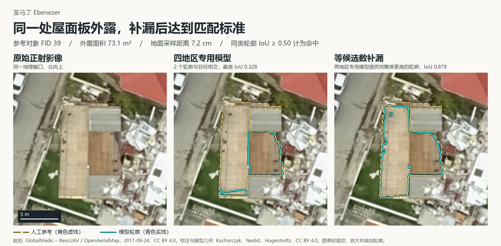

屋面损伤定位
在加勒比地区五个完整测区，比较相同复核预算下的露板和孔洞定位。候选必须与同类人工轮廓达到 0.50 的交并比，并完成一对一匹配。
| 方法 | 命中 | 误报 | 对象 F1 |
|---|---|---|---|
| 上游专用模型 | 501 | 768 | 46.63% |
| 多模型候选补漏 | 523 | 746 | 48.67% |

Ebenezer 的 FID 39 面积为 73.1 平方米。原始轮廓与标注的最高交并比为 0.328，补回完整轮廓后达到 0.879。
对照同一栋建筑的灾前、灾后影像，查看支持模型说明的局部证据。
按任务查看公开测试范围、比较对象和实际命中数。
在加勒比地区五个完整测区，比较相同复核预算下的露板和孔洞定位。候选必须与同类人工轮廓达到 0.50 的交并比，并完成一对一匹配。
| 方法 | 命中 | 误报 | 对象 F1 |
|---|---|---|---|
| 上游专用模型 | 501 | 768 | 46.63% |
| 多模型候选补漏 | 523 | 746 | 48.67% |

Ebenezer 的 FID 39 面积为 73.1 平方米。原始轮廓与标注的最高交并比为 0.328，补回完整轮廓后达到 0.879。
20 栋真实双期建筑来自 20 个不同图块。两位 AI 读者先独立记下影像所见，再匿名审核每种方法的整条说明。
| 方法 | 两人均认可 |
|---|---|
| 旧视觉 RAG | 1 / 20 |
| 本栋图像测量 | 20 / 20 |
| 测量 + Qwen 核验 | 20 / 20 |
两批 xBD 建筑共 40 栋，默认 Qwen 等级初评判对 14 栋，7 栋待判，10 栋毁坏中命中 1 栋。影像复核页展示的等级字段来自 xBD 原始标注。
页面使用公开影像的局部裁图和冻结实验的逐栋记录。
案例取自 xBD 测试分区的 8 栋建筑。每期均使用对应原始卫星影像与官方建筑多边形。页面将周边影像裁成场景图；切换「选区放大」显示实际参与测量的足迹内影像。
数据作者为 Ritwik Gupta 等，影像来源为 Maxar / DigitalGlobe Open Data Program。影像、足迹和派生裁图按 CC BY-NC-SA 4.0 共享。
评测页使用 Kucharczyk、Nesbit 与 Hugenholtz 发布的预测和人工矢量；Ebenezer 航拍的署名与裁切记录随案例提供。该图采用 CC BY 4.0 许可。